- trivial proof
- vacuous proof
- proof by contrapositive
- proof by contradiction
Contents
Mathematical theories are constructed starting with some fundamental assumptions, called axioms, such as "sets exist" and "objects belong to a set" in the case of naive set theory, then proceeding to defining concepts(definitions) such as "equality of sets", and "subset", and establishing their properties and relationships between them in the form of theorems such as "Two sets are equal if and only if each is a subset of the other", which in turn causes introduction of new concepts and establishment of their properties and relationships. Proofs are the arguments for establishing those properties and relationships. At the bottom level these arguments follow the inference rules of propositional and predicate logic, that is the conclusion of the theorem being proved must be derived from its hypotheses, axioms, definitions, and proven theorems using inference rules. However, at the bottom level they become tedious and inefficient as one can easily imagine. Thus in actual proofs short-cuts are taken using already proven theorems, using multiple inference rules in one step without explicitly mentioning them individually, omitting "obvious" proofs, and so on.Finding a proof is in general an art. There is no single method that works for all cases. However, at this level the most important thing to remember is to know and understand definitions of concepts involved. The next important thing to keep in mind is to look up relevant facts and try to use them. Even if you don't see the entire path to the goal, if you move one step forward from where you are, you get a new perspective and it often gives you some good ideas to pursue. Needless to say that you must not forget the inference rules. It is not a bad idea to review "
There are also some well used and often very useful proof techniques such as trivial proof, vacuous proof, direct proof, proof by contradiction, proving the contrapositive, and proof by induction. These are explained below with proofs of the theorems on subset relation as examples. If you wish to review identities, implications and inference rules
Theorem 1: 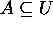 .
Proof: By the definition of , we need to show that 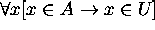 .
For that, what we need is to show that for an arbitrary x, 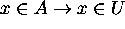 holds according to the inference rule "universal generalization".
Since x is an object of the universe of discourse, 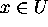 is true for any arbitrary object by the Universal Instantiation. Hence is true for any arbitrary object x ( 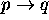 is always true if q is true regardless of what p is). Thus by the Universal Generalization , that is, by the definition of subset.
We say
is
trivially true if q is true, and this kind of proof
(i.e. showing q is true for
without referring to p ) is called a trivial proof.
Theorem 2:
.
Proof: By the definition of
, we need to show that
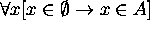 . For that,
what we need is to show that
for an arbitrary x,
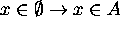 holds. Then apply the Universal Generalization.
Since 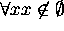 , for any arbitrary x, 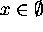 is false by the Universal Instantiation. Hence is true for any arbitrary x ( is always true if p is false regardless of what q is). Hence by the Universal Generalization . Thus by the definition of subset.
We say is vacuously true if p is false, and this kind of proof (i.e. showing p is false for ) is called a vacuous proof.
Proof Variations for Theorem 2
Theorem 2, like most others, can be proven in a number of other ways.
Here we try to prove it in two other ways.
(1) Proof by Contrapositive:
In this method, to prove
we prove its contrapositive,
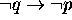 ,
instead.
So to prove
for an arbitrary x,
try to prove
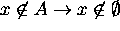 .
In this case since
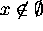
is true for any arbitrary x,
is trivially true. Hence its contraposiive
is also true.
(2) Proof by Contradiction:
In this method, to prove p we assume
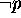 and
derive a contradiction from that. Then since implies a contradiction, it can not hold true.
Hence p must be true.
So to prove
we assume that
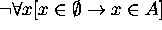 .
is equivalent to
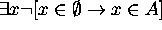.
This in turn is equivalent to
 .
.
However,
 implies
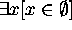
by formula 4 of the
implies
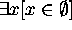
by formula 4 of the
Hence, can
not be true.
Hence,
.
More Proofs
Theorem 3: A = B iffProof: By the definition of A = B,
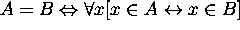
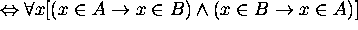
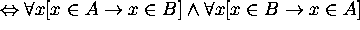
Since 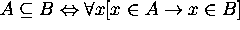 , this means that
Hence, A = B iff
Theorem 4:
Proof:
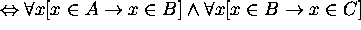

Thus for an arbitrary x in the universe,
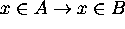 , and
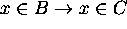 hold.
Hence, by hypothetical syllogism 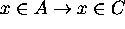
Hence, .